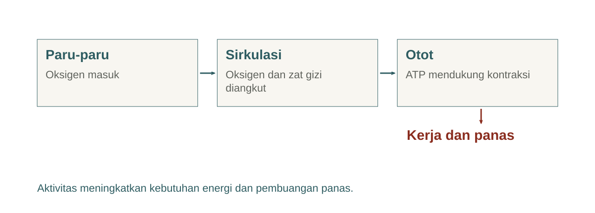
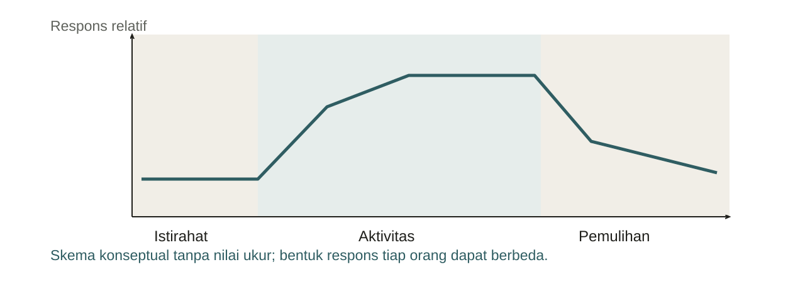
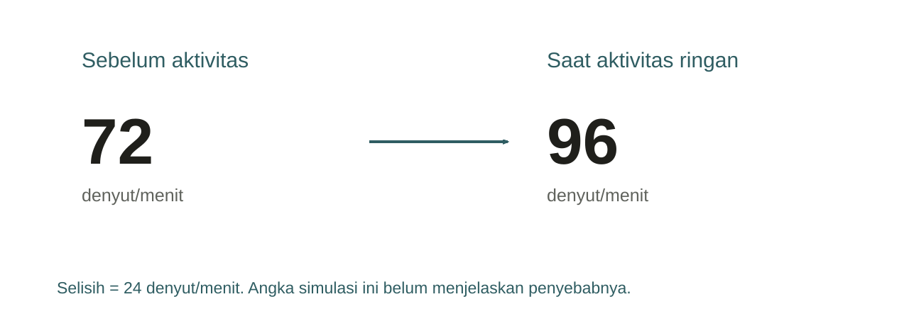
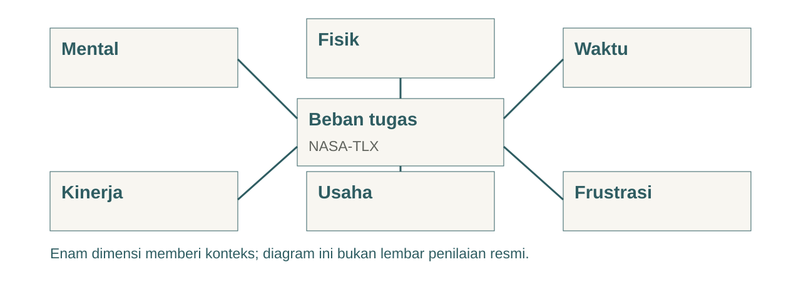
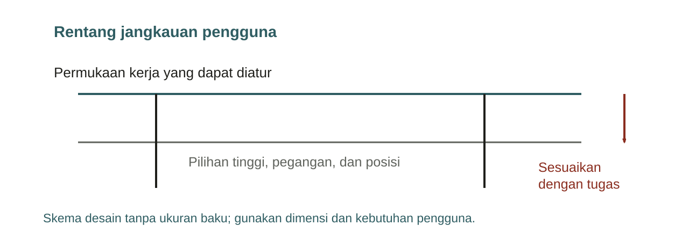
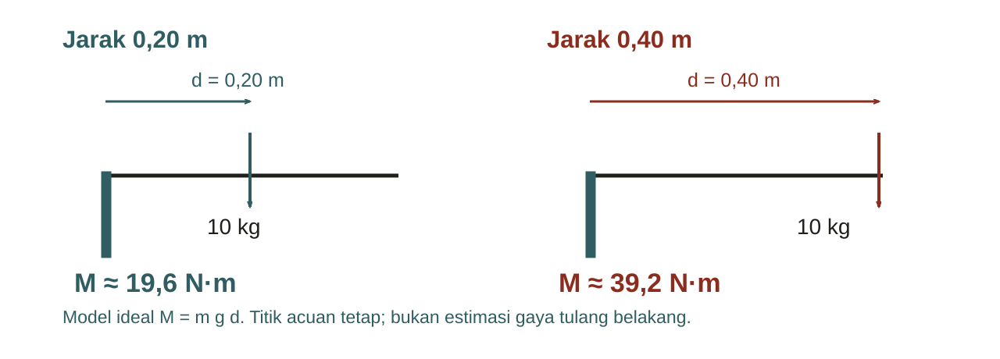
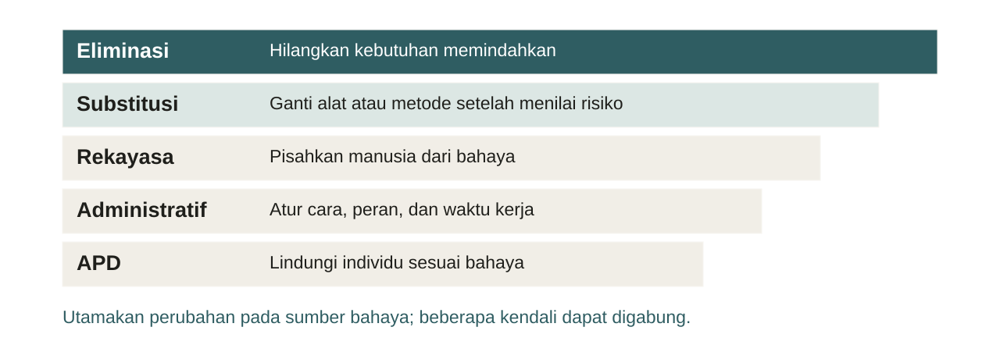
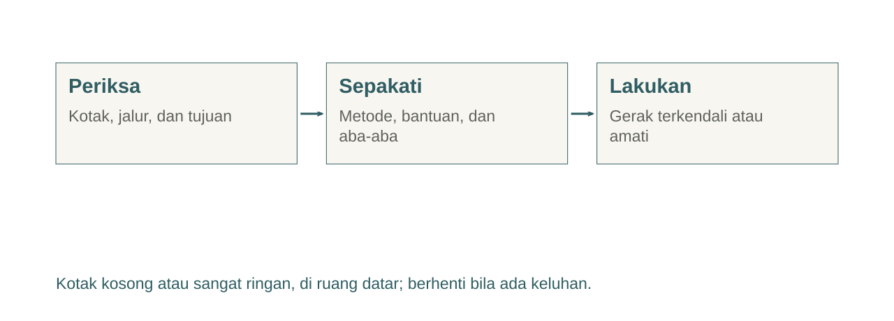

Pendidikan Jasmani & HSE Geofisika · Pertemuan 2
Fisiologi kerja dan ergonomi lapangan
Pendidikan Jasmani & HSE Geofisika
Pertemuan 2 · Wiwit Suryanto · S1 Geofisika UGM
Pendidikan Jasmani & HSE Geofisika · Pertemuan 2
Satu alat, dua pengalaman


- Medan, durasi, dan alat ikut menentukan beban kerja.
- Tugas yang sama dapat menuntut usaha berbeda.
- Data apa yang perlu dicatat sebelum membandingkan?
Pendidikan Jasmani & HSE Geofisika · Pertemuan 2
Capaian pertemuan
- Menjelaskan respons tubuh selama kerja dan pemulihan.
- Membaca indikator dengan mengetahui keterbatasannya.
- Merancang pemindahan alat dengan paparan yang lebih rendah.
Pendidikan Jasmani & HSE Geofisika · Pertemuan 2
Kebutuhan energi saat bekerja

Pendidikan Jasmani & HSE Geofisika · Pertemuan 2
Kerja dinamis dan kerja statis
| Pola kerja | Contoh geofisika | Implikasi desain |
|---|---|---|
| Dinamis | Berjalan membawa kabel | Kurangi jarak dan pengulangan |
| Statis | Menahan alat pada posisi tetap | Sediakan penopang atau ubah posisi |
| Gabungan | Membungkuk saat memasang sensor | Ubah tinggi kerja dan urutan tugas |
Pendidikan Jasmani & HSE Geofisika · Pertemuan 2
Respons awal dan pemulihan

Pendidikan Jasmani & HSE Geofisika · Pertemuan 2
Kapasitas aerobik dan VO₂max
- VO₂max menggambarkan kapasitas maksimal penggunaan oksigen.
- Nilainya berbeda dari kebutuhan oksigen pada satu tugas tertentu.
- Pengukuran maksimal memerlukan prosedur dan pengawasan yang sesuai.
Pendidikan Jasmani & HSE Geofisika · Pertemuan 2
Indikator menjawab pertanyaan berbeda
| Indikator | Kegunaan | Batas interpretasi |
|---|---|---|
| Denyut jantung | Respons sirkulasi | Dipengaruhi panas, stres, dan faktor lain |
| Persepsi usaha | Pengalaman intensitas | Subjektif dan perlu instruksi konsisten |
| Observasi tugas | Paparan pekerjaan | Butuh konteks rute dan durasi |
| VO₂ | Kebutuhan metabolik | Memerlukan alat dan protokol |
CDC · tautan pada catatan
Pendidikan Jasmani & HSE Geofisika · Pertemuan 2
Denyut jantung dalam konteks


- Catat aktivitas, durasi, lingkungan, dan waktu pengamatan.
- Bandingkan kondisi yang sebanding.
- Rumus usia dan alat ukur memiliki keterbatasan.
Pendidikan Jasmani & HSE Geofisika · Pertemuan 2
Contoh selisih denyut

Pendidikan Jasmani & HSE Geofisika · Pertemuan 2
Skala persepsi usaha
| Skala | Penggunaan yang tepat |
|---|---|
| Borg RPE 6–20 | Gunakan instruksi skala aslinya secara konsisten |
| Borg CR10 | Skala tersendiri dengan instruksi dan jangkar khusus |
| Skala usaha umum 0–10 | Dapat dipakai untuk refleksi kelas, dengan jangkar dijelaskan |
CDC · Borg Perception · Studi RPE dan denyut pada tugas kerja simulasi · tautan pada catatan
Pendidikan Jasmani & HSE Geofisika · Pertemuan 2
Talk test
- Pada intensitas sedang, orang umumnya masih dapat berbicara, tetapi sulit bernyanyi.
- Pada intensitas berat, orang umumnya hanya dapat mengucapkan beberapa kata sebelum mengambil napas.
CDC · tautan pada catatan
Pendidikan Jasmani & HSE Geofisika · Pertemuan 2
Observasi gerak ringan
- Jalan santai di tempat selama sekitar satu menit, bila nyaman.
- Amati perubahan napas dan persepsi usaha sebelum serta sesudahnya.
- Berhenti bila muncul keluhan. Peran pengamat memiliki nilai belajar setara.
Pendidikan Jasmani & HSE Geofisika · Pertemuan 2
Refleksi pengamatan
- Apa yang berubah, dan apa yang tetap?
- Faktor apa yang membuat perbandingan antarorang kurang tepat?
- Bagaimana informasi ini membantu merancang tugas lapangan?
Pendidikan Jasmani & HSE Geofisika · Pertemuan 2
Beban tugas juga memerlukan perhatian

NASA · tautan pada catatan
Pendidikan Jasmani & HSE Geofisika · Pertemuan 2
Antropometri untuk desain kerja

Pendidikan Jasmani & HSE Geofisika · Pertemuan 2
Risiko pemindahan alat
| Faktor | Pertanyaan sebelum mulai |
|---|---|
| Beban | Berat, isi, pegangan, dan stabilitasnya diketahui? |
| Tugas | Seberapa jauh, tinggi, sering, dan lama? |
| Lingkungan | Ada lereng, tangga, kabel, atau permukaan licin? |
| Pengguna | Bantuan dan penyesuaian apa yang diperlukan? |
NIOSH · CCOHS · tautan pada catatan
Pendidikan Jasmani & HSE Geofisika · Pertemuan 2
Lingkup persamaan angkat NIOSH


- RNLE memiliki lingkup tugas angkat dua tangan tertentu.
- Membawa atau mendorong alat memerlukan penilaian yang sesuai.
- Troli tidak otomatis cocok untuk lereng atau jalan licin.
NIOSH · CCOHS · tautan pada catatan
Pendidikan Jasmani & HSE Geofisika · Pertemuan 2
Jarak beban dan momen gaya

Pendidikan Jasmani & HSE Geofisika · Pertemuan 2
Pilihan pengendalian

OSHA · tautan pada catatan
Pendidikan Jasmani & HSE Geofisika · Pertemuan 2
Praktik pemindahan kotak ringan

Pendidikan Jasmani & HSE Geofisika · Pertemuan 2
Rancangan kelompok
- Gunakan foto alat dari pertemuan pertama.
- Tuliskan informasi yang sudah diketahui dan yang masih perlu diverifikasi.
- Usulkan satu perubahan desain serta satu cara memeriksa hasilnya.
Pendidikan Jasmani & HSE Geofisika · Pertemuan 2
Exit ticket
- Mengapa denyut saja belum cukup untuk menilai beban kerja?
- Apa perbedaan kapasitas aerobik dan tuntutan tugas?
- Perubahan apa yang paling membantu pada kasus kotak alat Anda?
Pendidikan Jasmani & HSE Geofisika · Pertemuan 2
Tugas penghubung
- Buat profil pekerjaan satu halaman berdasarkan foto alat.
- Cantumkan tugas, rute, paparan, informasi yang belum diketahui, dan usulan kendali.
- Bawa profil ini untuk menyusun JSA pada pertemuan ke-3.
Pendidikan Jasmani & HSE Geofisika · Pertemuan 2
Bacaan utama
- CDC: intensitas aktivitas dan talk test.
- NIOSH dan CCOHS: lingkup penilaian angkat.
- NASA: NASA-TLX. OSHA: hierarki pengendalian.
CDC · NIOSH · CCOHS · NASA · OSHA · tautan pada catatan
Pendidikan Jasmani & HSE Geofisika · Pertemuan 2
Pertemuan berikutnya
- Kelelahan, tidur, dan kerja dalam panas.
- Profil pekerjaan menjadi JSA dengan kendali, PIC, dan verifikasi.